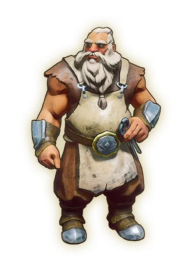

Getting Started is the second primary and tutorial quest. It will teach you about hydration, sustenance, and crafting.
Overview
- 1 dirty water
- 10 ash logs
- 8 stones
Location
Walkthrough
Doric wants to teach you some survival basics


To start the quest, the player must accept to learn the basics in the First Steps quest.
After you accept it, go and talk to Doric just outside the temple. He will teach you about the importance of sustenance (food) and hydration (drink). He will send you to get some water (and maybe some redberries on the way). Go south or north to the pond, go into the water, and get at least one dirty water (default hotkey: E). Go back to Doric, who will tell you that you need to boil the water, otherwise it will have side effects (you will be poisoned, it is implied, by Soulscourge if you drink too much dirty water). Then he will tell you that you need to craft a stone club.
Gather at least one ash log or stone to open the building menu, from where you can build the crafting table. You need to gather 4 ash logs to make the crafting table, and an additional 6 ash logs and 8 stone to craft the stone club. The logs can be found lying around the trees, and stones can be found lying around the ruins of the temple. Speak to Doric when you have the club. He will send you to Vannaka to learn to fight, starting Ratcatcher.
Congratulations. Quest complete!
Rewards
Required to Complete
This quest is required to complete the following quest(s):
This guide is the wiki's Getting Started article, by its editors, reformatted for this site. Licensed CC BY-NC-SA 3.0.